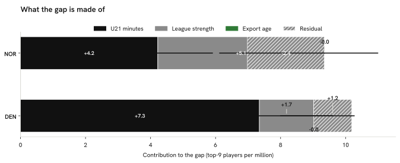

Summary · Question 12 of 14
Gap in players per million between Czechia and Norway and Denmark, split over three measured channels (descriptive)
Of the 6.98 players per million between Norway and Czechia, youth minutes go with +4.22 (+1.22 to +5.91), league strength with +5.12 (+1.90 to +6.77) and export age with 0.00; of the 10.19 for Denmark, with +7.35 (+2.17 to +10.27), +1.67 (+0.65 to +2.26) and 0.00 (90 % bootstrap intervals).

In this 8-country fit the league-strength coefficient is negative (−56.50 per unit of the league multiplier m_L): a weaker home league goes with more players per million in the top-ranked leagues, so a contrast country whose league is weaker than Czechia’s (m_L 0.665) gets a positive league-strength contribution.
The export-age channel is zero for these contrasts because Czechia, Norway and Denmark share the same median age at the first top-9 season among recent entrants (22); it carries nothing by construction, not by estimate.
Shares of a gap can add up to more than 100 % when the residual is negative, that is when the channels together predict more than the observed gap.
How we know
Of the 6.98 per million between Norway and Czechia, a residual of −2.37 is not carried by the three channels.
As an analytics question In numbers: a linear split of the per-capita gap into U21 minutes, league strength and export age across 8 peer countries.
What we did We used the players who changed leagues to work out what a season in one league is worth in another, then split the gap between countries into the parts that line up with young players' minutes, league strength and the age players move abroad.
Sources Ridge-regression linear split (α = 1.00, standardised channels), Blinder-Oaxaca-style (Oaxaca, 1973; Blinder, 1973), fit on the 8 peer countries with data on all three channels; 90 % bootstrap intervals, 1000 resamples, seed 42 plus the contrast’s index; with 8 countries and three correlated channels the split is indicative; a decomposition of a correlation, not a causal accounting.
What this means
The decomposition says how the gap lines up with three measured channels across 8 countries, with the contributions and intervals above. With 8 countries, three correlated channels and a ridge penalty, the split is indicative: it describes an association and gives no estimate of what would change if one channel changed.
What this does not show
Channels the model does not include (coaching, money, scouting), countries outside the 8, and a causal share of the gap for any channel.
Data snapshot: FBref tables fetched 14 September 2026, snapshot commit ddf1c7b · code: src/gap_decomposition.py · status: exploratory, not pre-registered · all limitations